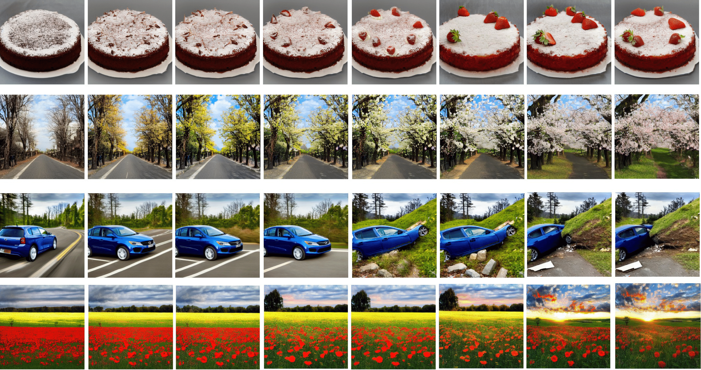

Text-to-image (T2I) models can be maliciously used to generate harmful content such as sexually explicit, unfaithful, and misleading or Not-Safe-for-Work (NSFW) images. Previous attacks largely depend on the availability of the diffusion model or involve a lengthy optimization process.
In this work, we investigate a more practical and universal attack that does not require the presence of a target model and demonstrate that the high-dimensional text embedding space inherently contains NSFW concepts that can be exploited to generate harmful images. We present the Jailbreaking Prompt Attack (JPA). JPA first searches for the target malicious concepts in the text embedding space using a group of antonyms generated by ChatGPT. Subsequently, a prefix prompt is optimized in the discrete vocabulary space to align malicious concepts semantically in the text embedding space.
We further introduce a soft assignment with gradient masking technique that allows us to perform gradient ascent in the discrete vocabulary space. We perform extensive experiments with open-sourced T2I models and closed-sourced online services with black-box safety checkers. Results show that (1) JPA bypasses both text and image safety checkers (2) while preserving high semantic alignment with the target prompt. (3) JPA demonstrates a much faster speed than previous methods and can be executed in a fully automated manner. These merits render it a valuable tool for robustness evaluation in future text-to-image generation research.
We perform extensive experiments with open-sourced T2I models, e.g.stable-diffusion-v1-4 and closed-sourced online services, e.g. DALL·E2, Midjourney with black-box safety checkers. Results show that (1) JPA bypasses both text and image safety checkers (2) while preserving high semantic alignment with the target prompt. (3) JPA demonstrates a much faster speed than previous methods and can be executed in a fully automated manner. These merits render it a valuable tool for robustness evaluation in future text-to-image generation research.
JPA: Jailbreaking Prompt Attack
JPA: Jailbreaking Prompt Attack
This section introduces our Jailbreaking Prompt Attack (JPA), illustrated in Figure 4(a). Given a sensitive prompt \( p_t \), JPA searches for a rewritten version \( p_a \) that avoids detection but keeps the original NSFW meaning.
We treat the original prompt \( p_t = [p_1, p_2, ..., p_n] \) as a sequence of tokens. JPA adds \( k \) learnable tokens in front:
\( p_a = [v_1, ..., v_k, p_1, ..., p_n] \). Each learnable token \( v_i \) is randomly picked from a vocabulary like CLIP's.
We enable gradients for these tokens and use backpropagation to optimize them. For each token position, any word from the vocabulary can be used as a replacement.
Figure 4: (a) Overview of JPA. (b) Safety checkers block or sanitize sensitive prompts. JPA finds new prompts that bypass filters while keeping NSFW meaning.
To guide the attack, we align the prompt with specific NSFW concepts (e.g., "nudity"). Using ChatGPT-4, we generate antonym pairs (e.g., "nude" vs. "clothed") and compute:
\[
r = \frac{1}{N}\sum_{i=1}^n \mathcal{T}(r_i^+) - \mathcal{T}(r_i^-)
\]
We then modify the original prompt’s embedding:
\[
\mathcal{T}(p_r) = \mathcal{T}(p_t) + \lambda \cdot r
\]
This keeps the original meaning while adding NSFW intent.
To turn the embedding back into a real prompt, we find the prompt \( p_a \) that’s closest in cosine similarity:
\[
\max_{p_a}\frac{\mathcal{T}(p_a)\cdot \mathcal{T}(p_r)}{| \mathcal{T}(p_a)|\cdot| \mathcal{T}(p_r)|}
\]
We use Projected Gradient Descent (PGD) to search for prompts. Softmax is used over the vocabulary:
\[
\text{embed}[i] = \sum_{k=1}^L \frac{e^{v_{ik}}}{\sum_{h=1}^L e^{v_{ih}}} E_k
\]
where \( L \) is the vocabulary size, \( E \) is the embedding matrix, and \( v_{ik} \) is the soft assignment.
After optimization, the final token for each position is chosen as:
\[
v_i = \arg \max_k v_{ik}
\]
Because the search may pick overly sensitive tokens, we apply gradient masking. Words identified as sensitive receive very large negative gradients (e.g., -1e9), preventing their selection. This keeps the adversarial prompts effective without being blocked.
Main Results
Evaluation with Online Services
Many online services use safety filters, but their details are not public. The figure below shows that JPA can still bypass these filters and create NSFW images.
We tested JPA on four popular platforms: DALL·E 2, Stability.ai, Midjourney, and PIXART-α. More examples are in the Appendix.
Figure 1: JPA-generated adversarial prompts on four T2I services. Red text: JPA prompts. Black text: original I2P inputs.
Evaluation on Offline T2I Models with Removal Methods
We also tested JPA against models using concept removal defenses. The table shows that offline models like FMN and SLD-Medium struggle to block nudity content.
Table 1: Attack performance on “nudity,” evaluated using ASR and FID. Best results are in bold.
Table 2: Attack performance on “violence,” evaluated using ASR and FID. Best results are in bold.
Controllable NSFW Concept Rendering
We found that by changing the strength of NSFW concept embeddings, JPA can control how much NSFW content appears in the images.
As Figure 2(b) shows, a higher λ leads to more visible NSFW content.
Figure 2: Example using a malicious prompt. (a) Prior methods fail to align NSFW content with the prompt meaning. (b) By adjusting λ, we control how much “nudity” appears in the image.
We also illustrate how the parameter r influences the process of controllable ordinary concept rendering. Here, r₊ and r₋ mark the concept words highlighted in red and underlined, respectively.
Figure 3: The rendered detail of a target prompt and the contrast description of the rendered concept.

Figure 4: A visualization of the controllable ordinary concepts rendering process.
Poster
Citation
If you find our work useful in your research, please consider citing:
@article{ma2024jailbreaking,
title = {Jailbreaking prompt attack: A controllable adversarial attack against diffusion models},
author = {Ma, Jiachen and Li, Yijiang and Xiao, Zhiqing and Cao, Anda and Zhang, Jie and Ye, Chao and Zhao, Junbo},
journal = {arXiv preprint arXiv:2404.02928},
year = {2024}
}